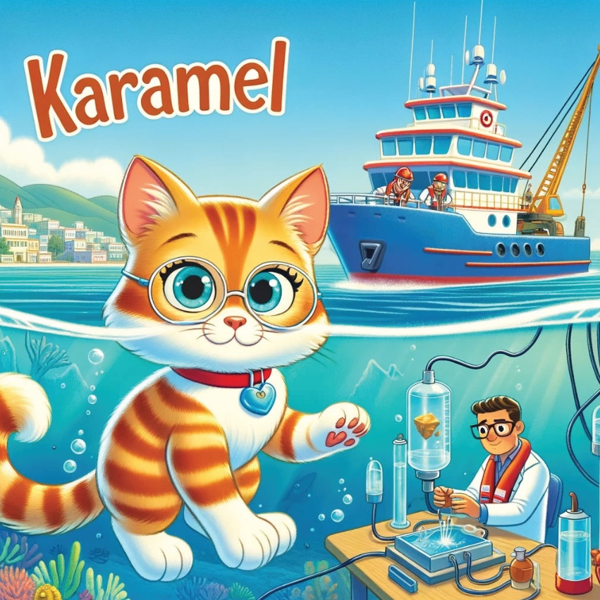
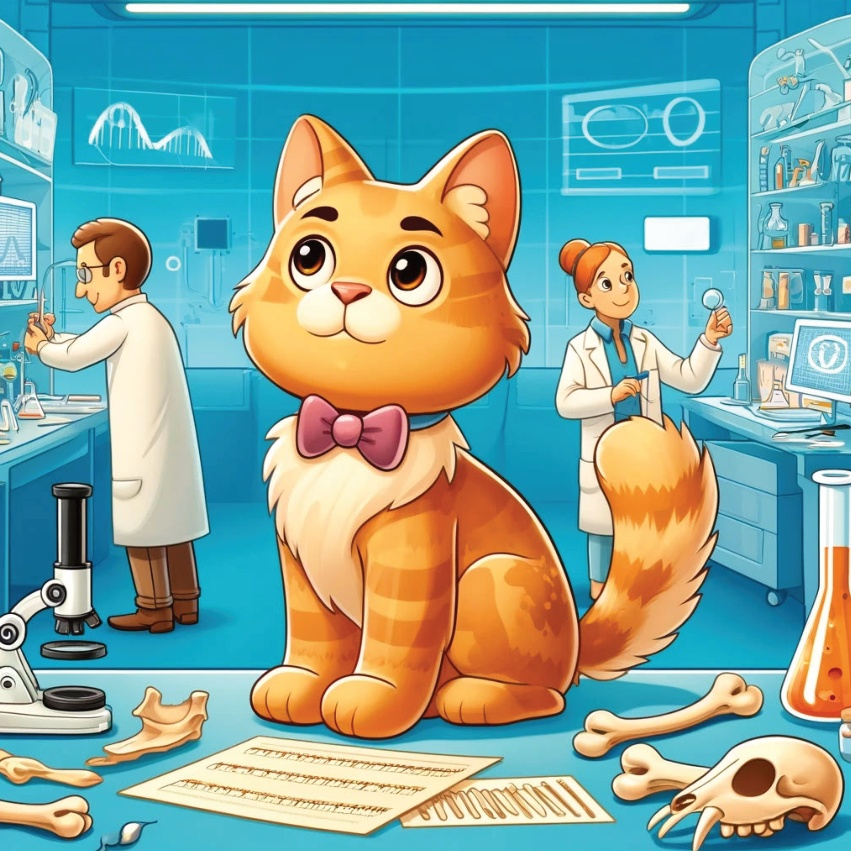
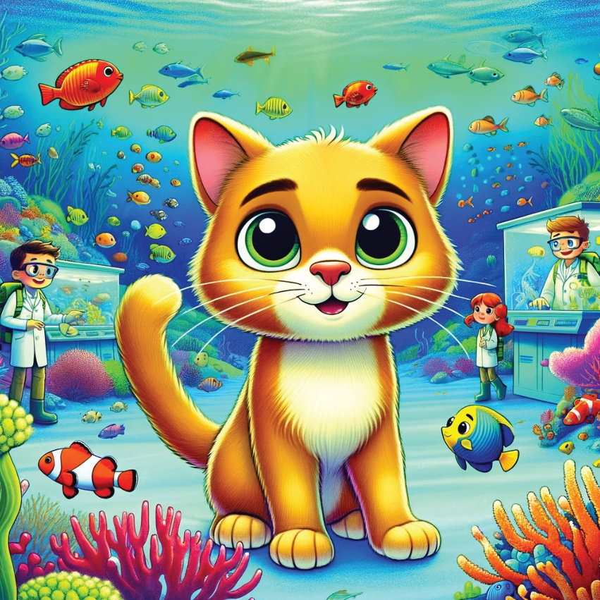
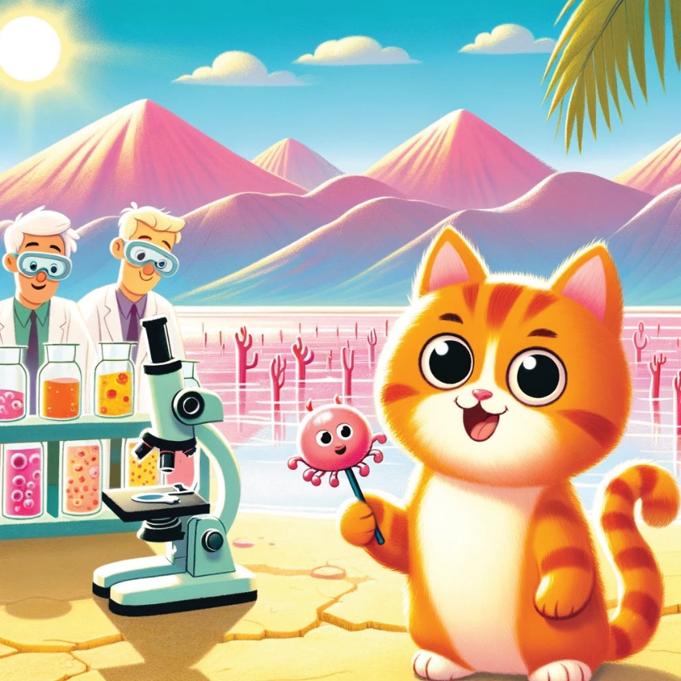
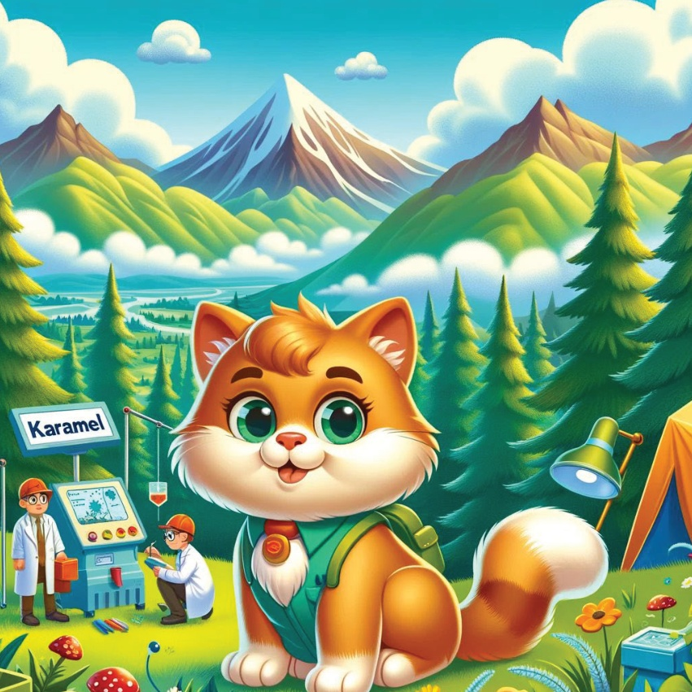
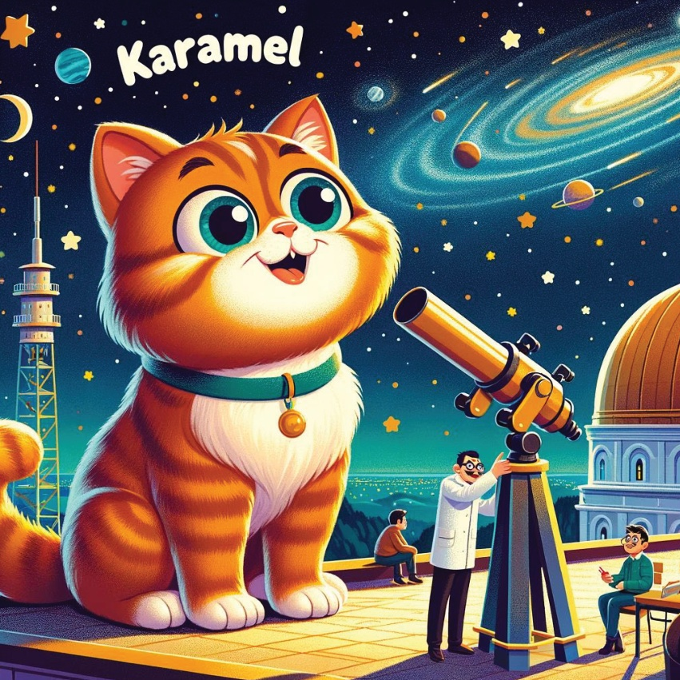
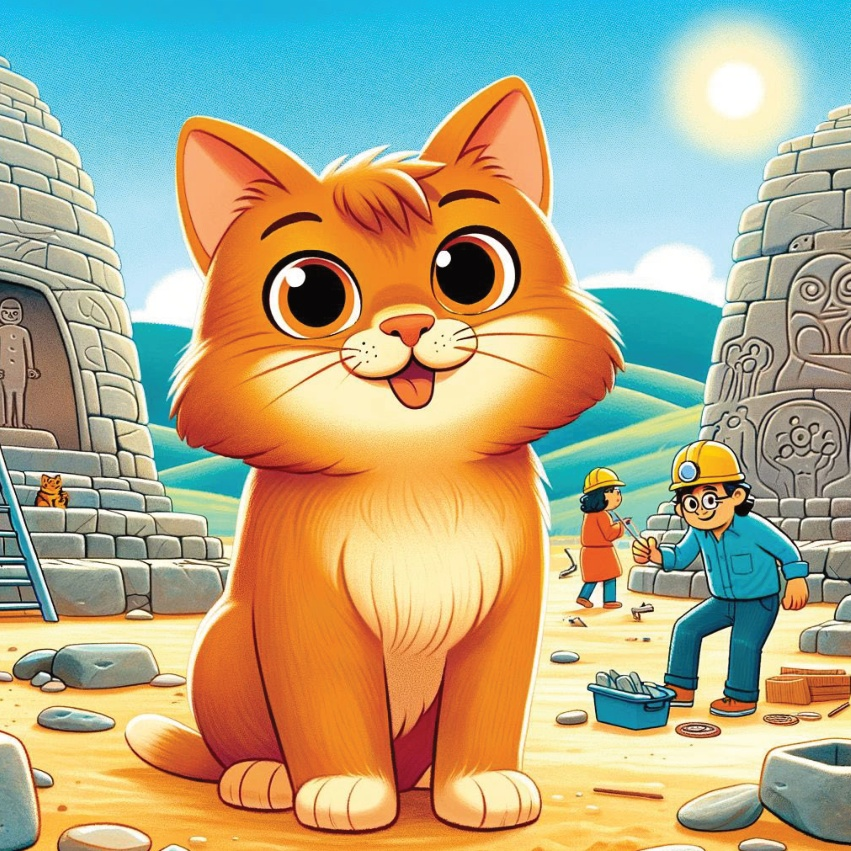

Bugünlerde, meraklı küçük bir kedi olan Karamel vardı ve yeni şeyler öğrenmeyi çok seviyordu. Bir gün, Karamel bir harita buldu ki farklı bilimsel keşiflerin Türkiye'de yapıldığına dairdi. Heyecanla, bu ilginç keşifleri ortaya çıkarmak için bir maceraya başladı.
4
5
Marmara Bölgesi –
Marmara Denizi'nde deprem araştırması
Karamel ilk gittiği yer, Marmara Denizi’ydi;
bu yerde depremlerle çalışan bilim insanlarıyla karşılaştı.
Onlar, bu doğal olayları anlamak için kullandıkları özel teknolojiyi ve nasıl çalıştığını gösterdiler ve insanların güvenliğini korumak için.
6

7
Aegean Region –
Anatolia DNA Analysis in Izmir
Next, Karamel traveled to Izmir,
where she met archaeologists analyzing
ancient DNA from historical remains.
She learned how these scientists
uncover secrets of the past
and bring history to life.
8

9
Antalya'da deniz canlıları ve marine biyoloji araştırmaları
Antalya'da, karamel balık
su yüzeyine doğru dalıp,
marine biyoologlarla birlikte
renkli deniz yaşamını keşfetti.
Deniz yaşamının önemini öğrendi.
10

11
Merkezi Anadolu –
Okyanus Tuzdaki Mikroorganizmalar
Karamel, Lake Tuz’a gitti ve burada,
mikrobiyal yaşamı hakkında çalışan bilim insanlarıyla karşılaştı.
Bunu şaşırdı çünkü bu küçük canlıların ve
özel adaptasyonlarının çok önemli olduğunu öğrendi.
12

13
Karanlık Deniz Bölgesi –
Rize'deki İklim Değişikliği Araştırması
Rize'de, Karamel, iklim değişikliğinin etkilerini inceleyen bilim insanlarıyla çalışıyordu.
Oları, veri toplama ve doğal dünyayı korumak için çalışma yapıyordu.
14

15
Doğu Anadolu Bölgesi –
Erzurum’da Astronomi Keşifleri
Karamel’in bir sonraki durağı Erzurum,
burada bir gözlemde astronomlar ve yıldızları ve gezegenleri inceleyen insanlarla karşılaştı.
Gözlem cihazını kullanarak evrenin güzelliklerini öğrendi.
16

17
Ege Bölgesi –
Göbekli Tepe'nin son durağı Göbekli Tepe.
Karamel'in sonu burada idi.
Archaeologlar bu bölgede keşif yaptı ve erken insan uygarlığına dair sırları ortaya çıkardı.
18

19
İçinde hayranlıkla dolu kalmıştı ve zengin keşiflerle dolu zihnini aydınlattı,
Karamel evine döndü,
sonraki maceraları hayal etmeye başladı.
Gerçekte Türkiye'nin
kurtuluşlu tarih ve bilim insanlarının olağanüstü çalışmaları
bu değildiğini fark etti.